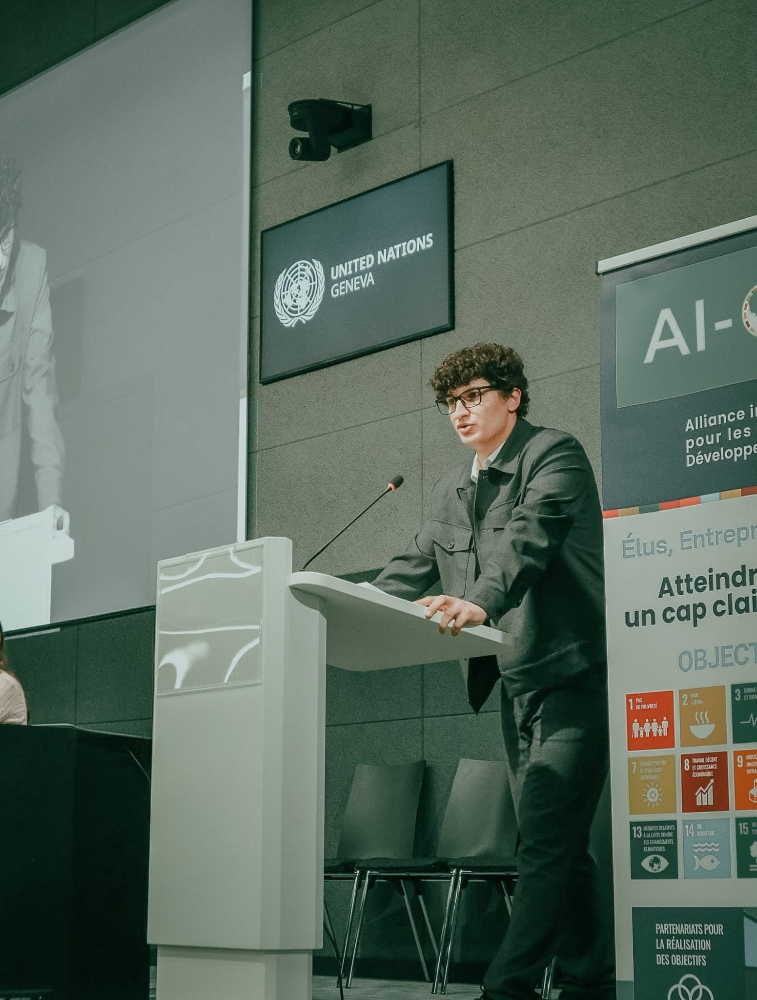
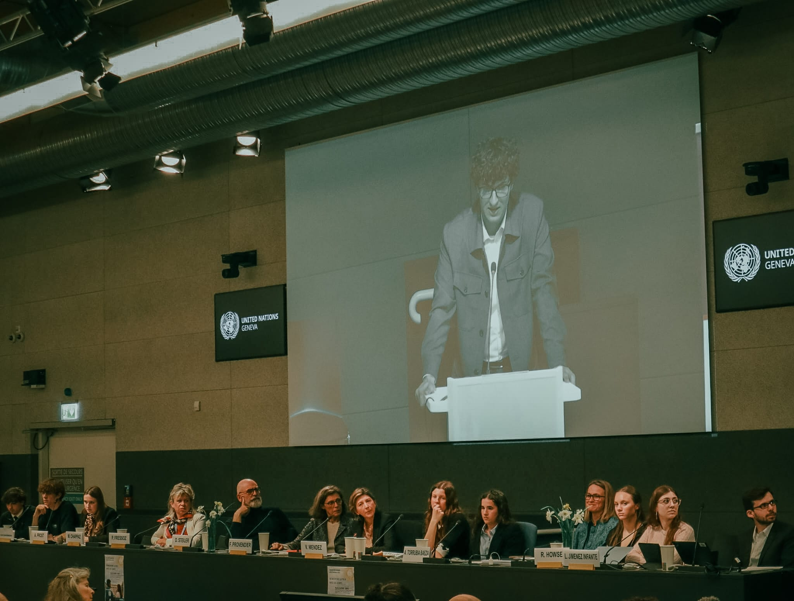
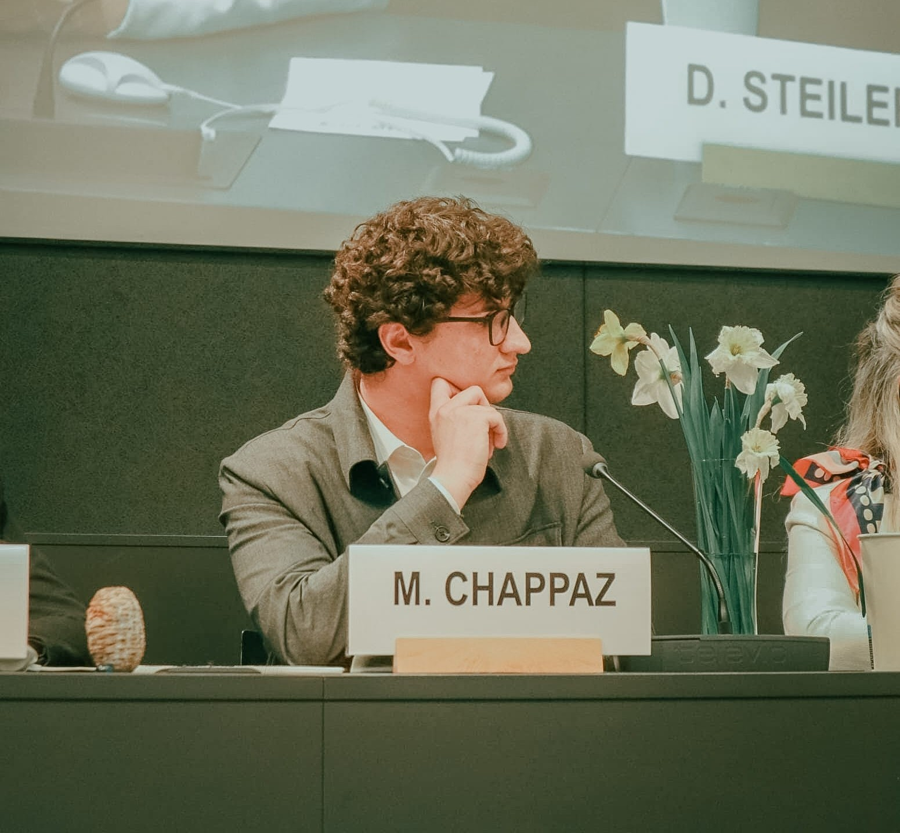
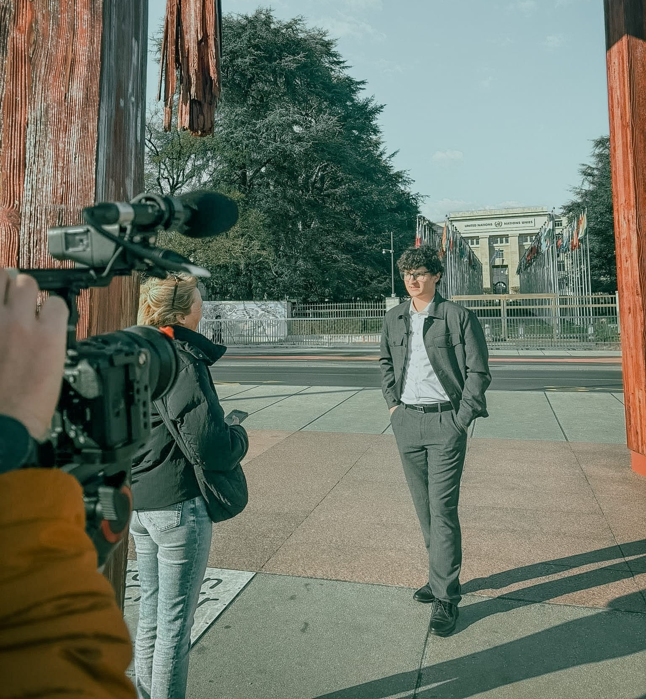
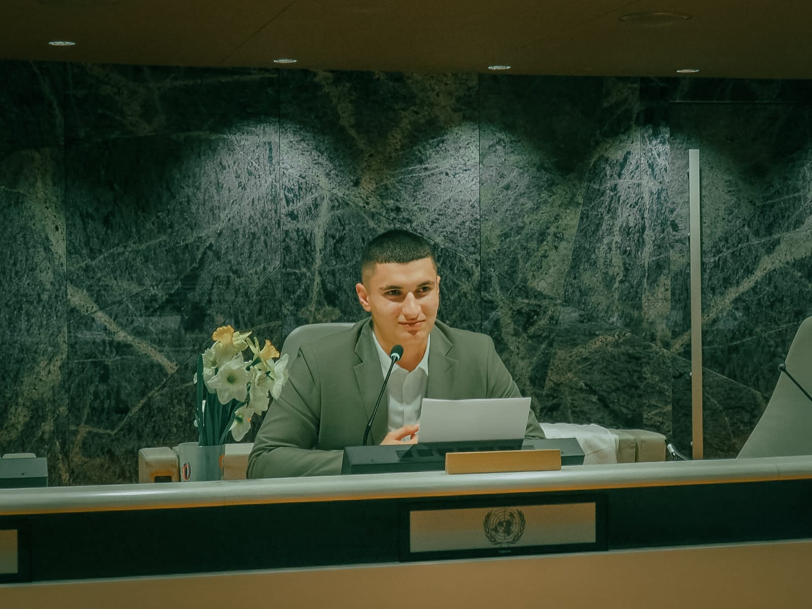
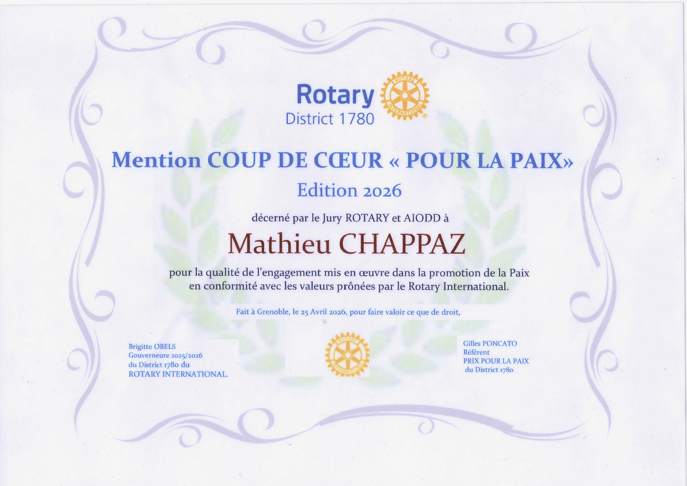

Orateur et représentant de la jeunesse aux Nations Unies. Porter les enjeux de ma génération face aux décideurs du monde entier.
Représentant de la jeunesse auprès des Nations Unies, j'interviens en tant qu'orateur pour défendre les positions et préoccupations de la jeune génération sur des enjeux globaux : climat, éducation, inégalités, diplomatie internationale.
Je crois que la jeunesse n'a pas à attendre 40 ans pour avoir une voix. L'ONU est l'une des scènes où cette voix peut résonner au niveau mondial. C'est une responsabilité que je prends très au sérieux.
Avril 2026
Journée internationale de la conscience et de la paix
Membre du comité de pilotage. Préparation et délivrance d'un discours sur les thèmes de la paix et de l'art. Représentation de la voix des jeunes face aux instances décisionnaires.
Remise des prix du Rotary
Lauréat du "Prix Coup De Cœur Pour La Paix" décerné par le jury Rotary. Préparation et délivrance d'un discours sur les thèmes de la paix et de l'art.
Avril 2025
Journée internationale de la conscience et de la paix
Préparation et délivrance d'un discours sur les thèmes de la paix, de l'humanisme et des médias.





Prononcé au Palais des Nations Unies de Genève lors de la Journée Internationale de la Conscience 2026, ce texte décrit un monde assombri par la haine, mais qui pourrait être illuminé par l'Art. Récompensé par une standing ovation.
Les oubliées, les silencieuses, les invisibles. Le féminisme mal compris, les agressions trop peu punies, la femme comme objet, son absence dans la préoccupation scientifique.
L'égalité est une dette, la paix est un combat vivant. Ce discours au ton satirique milite contre la fausse conscience et la hiérarchie des conflits. Standing ovation au Palais des Nations Unies.

Cliquer pour agrandir